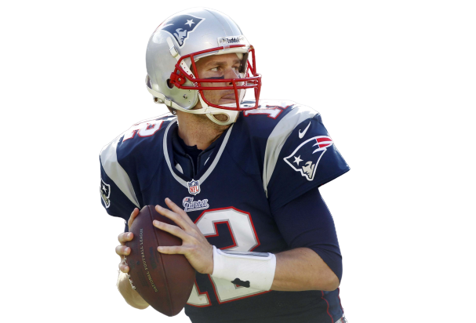
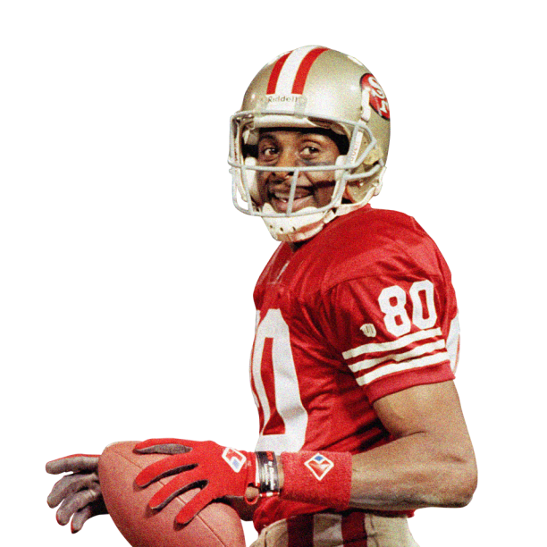
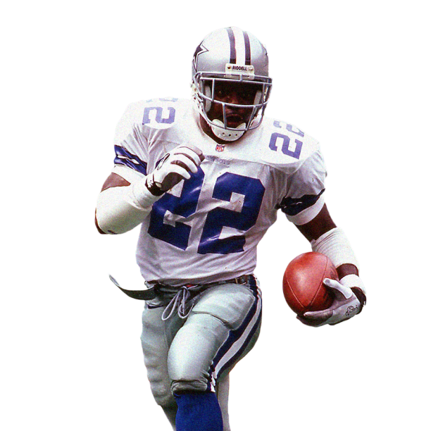
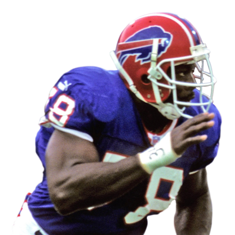
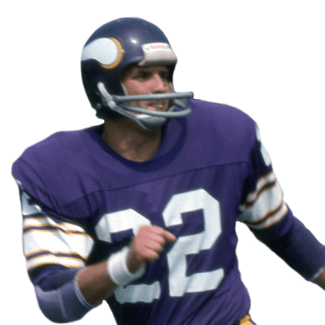
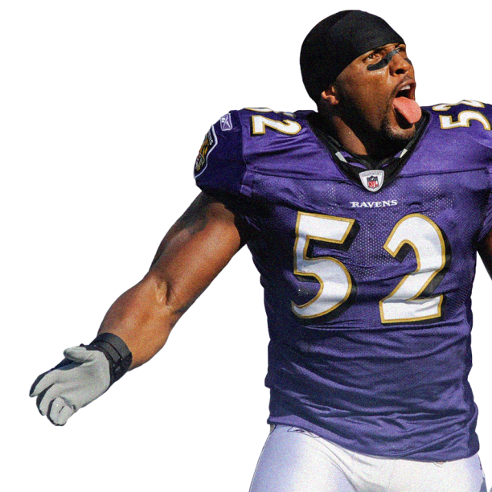

Career Passing Yards Leader
Tom Brady
Career Stats
- Years Active: 2000-2022
- Passing Yards: 89,214
- Passing Tds: 649
- Teams: Patriots , Buccaneers

Career Receiving Yards Leader
Jerry Rice
Career Stats
- Years Active: 1985-2004
- Receiving Yards: 22,895
- Receiving Tds: 197
- Teams: 49ers, Raiders, Seahawks

Career Rushing Yards Leader
Emmitt Smith
Career Stats
- Years Active:1990-2004
- Rushing Yards:18,355
- Rushing Tds: 164
- Teams: Cowboys, Cardinals

Career Passing Yards Leader
Bruce Smith
Career Stats
- Years Active:1985-2003
- Sacks: 200
- Tackles: 1,078
- Teams: Bills, Redskins/Commanders

Career Interceptions Leader
Paul Krause
Career Stats
- Years Active: 1964-1979
- Interceptions: 81
- Tackles: Unavailable
- Teams: Vikings, Redskins/Commanders

Career Tackles Leader
Ray Lewis
Career Stats
- Years Active: 1996-2012
- Total Tackles: 1568
- Sacks: 41.5
- Teams: Ravens
